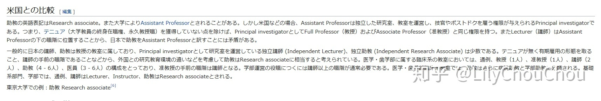

微妙的日本大学的教员职位”助教“---只为更真实的了解
日本留学，尽量不要找 教授以下的职位的教员。日本大学一般是“講座制”的形式，“講座制”是日本大学所属系级单位，由教授及其下属的副教授、讲师、助教等组成。所以，日本大学实验室也就是这种“講座制”，一个实验室内包含教授，副教授、讲师、助教等。和中国，美国的实验室不一样。
职位高低顺序: 助手 < 助教 < 講師 < 准教授 < 教授 < 副学長 < 学長 “講座制”的日语解释，如果看不懂请忽略，只是表明出处而已。
講座制：大学などで，研究や教育のために教授など必要な人員を備えて，一つの組織を持つもの。
下面进入正题，来介绍一下日本大学的教员职位，其可以分 教授，准教授，講師，助教，助手 这几种（除去”学长“和”副学长“，类似校长和副校长的职位，也不考虑名誉教授）。 1.各个职位的含义 教授
教授：自分の専門分野の研究・授業、大学の運営
引用部分是日语解释，换言之，日本教授除了教学，确定研究方向，决定预算外，还有一个很重要角色就是管理一些大学学院事务（”大学の運営”）
准教授
准教授：自分の専門分野の研究・授業
日本的副教授称为“准教授”，大部分职能与教授一致，而且副教授是实验室具体细节事务的实际负责人。但，很多事情的确定还是需要由教授来审核同意的。 所以留学找正教授比较好，话语权最大。
講師
講師：准教授とほとんど同じで、大学によっては自分の研究室が持てる
日本讲师即负责教学，同时也承担一定科研工作，职位比准教授低。
助教
助教：授業は持てるが、自分の研究室はない
这里一定要注意“助教”，日语汉字和中文一样，都成为助教，但这 “助教”一词并不等于“助教授”，甚至连沾点教授这一词的称呼算不上。其实，个人理解，比博士后高一点点吧，性质和博士后差不多，只是助教能承担一定教学，博士后不可以，虽然这样理解不太准确，但能说明日本“助教”的基本性质。
下面参考一下日本维基百科的说明，日本“助教”和美国“Assistant Professor”区别比较  在 美国，Assistant Professo，有自己 独立 的实验室，可以开展 独立 的研究,可以 独立 招生，换言之，就是Principal investigator 但在 日本，助教，没有自己独立实验室，没有招生的权利，也不能另起炉灶开展独立于受雇实验室的研究。换言之，和博士后的职能差不多，就是多一项可以承担一定教学的职能。
因此，日本“助教”不等于“Assistant Professor”,因此，这种文字游戏，“海归”+“助教”可以骗到好多人。
助手
助手：授業は持たなくて実験の手伝いや整理整頓をする
日本大学实验室的助手，大部分也就是博士后了，博士后，用日语有很多称谓，比如“特聘研究員”，都不算体制内的职位。很显然，比起助手，“特聘研究員”是一个高大上的称呼。
最后以一张图结尾，希望别被一些文字游戏，让自己产生很多信息的误解 有价值的参考出处 参考1 参考2 参考3
您也可以请我喝一杯咖啡,支持我的创作~ 比特币（BTC）:1FLHDgSp76u3CoasTF7fDyYBooGv8Frh5f 比特币现金（BCH）:1FLHDgSp76u3CoasTF7fDyYBooGv8Frh5f Ethereum (ETH): 0x5061c5ddeb4f82e3070a4bd593d2b1cc90d1bfc4